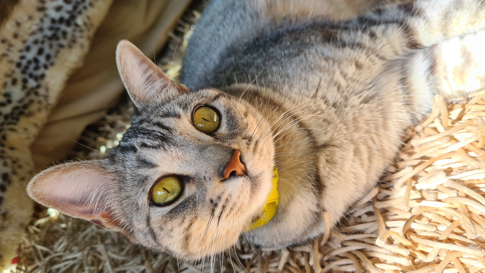

¿Qué saber antes de tener un gato?

Los gatos domésticos, sea cual sea su raza, son todos miembros de una misma especie, Felis catus, que mantiene una
relación con los humanos desde hace mucho tiempo. Los antiguos egipcios habrían sido los primeros en domesticar gatos,
hace ya 4.000 años.
Al igual que sus parientes salvajes, los gatos domésticos son cazadores natos, capaces de acechar a sus presas y abalanzarse
sobre ellas con sus garras y dientes. Son particularmente eficaces de noche, cuando sus ojos reflectantes les dotan de una
visión mucho más nítida que la de sus víctimas. También poseen un oído muy agudo.
De igual manera, los gatos maullan para comunicarse exclusivamente con los humanos. La nariz de cada gato es diferente,
como su huella dactilar. La vieja creencia de que los gatos son completamente independiente es falsa. No les gusta estar
solos, y muestran signos de ansiedad por separación cuando se alejan de la persona con la que comparten un fuerte vínculo.
Entre las 2 y 16 semanas de edad es cuando se acostumbran a interactuar con humanos y son menos propensos a huir de ellos.
Este es un período crítico en su desarrollo, ya que es el momento en el que se separan de su madre y van a su nuevo hogar.